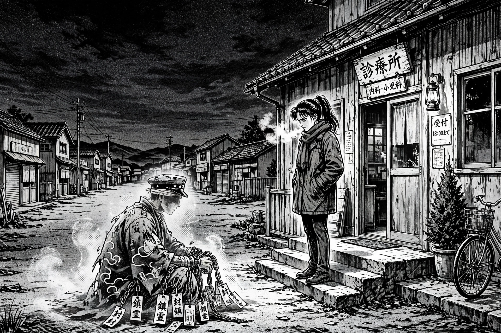
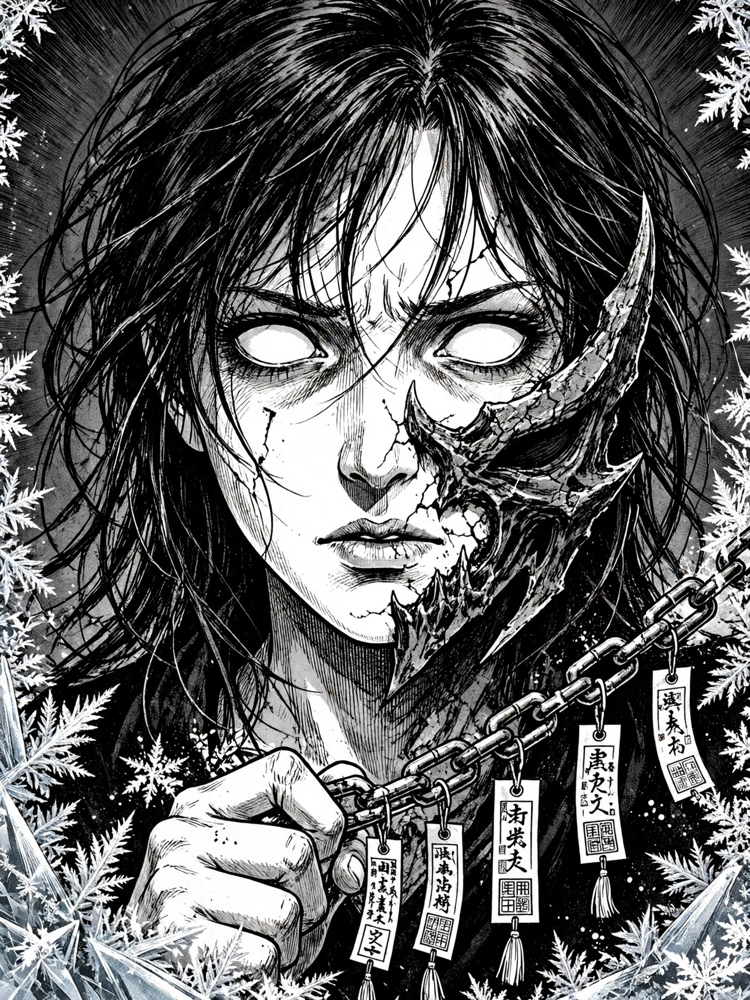
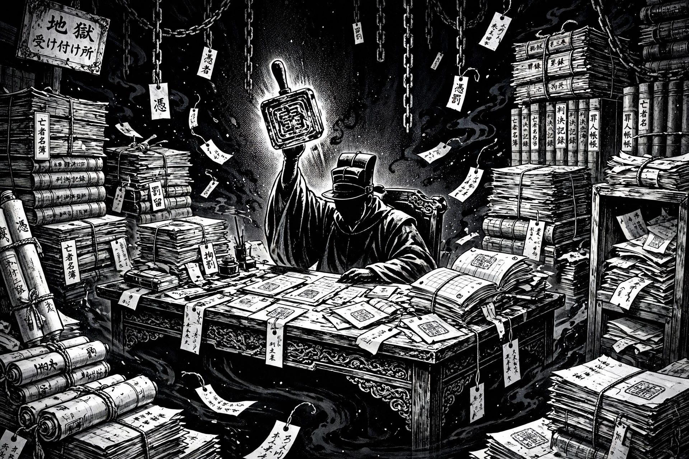
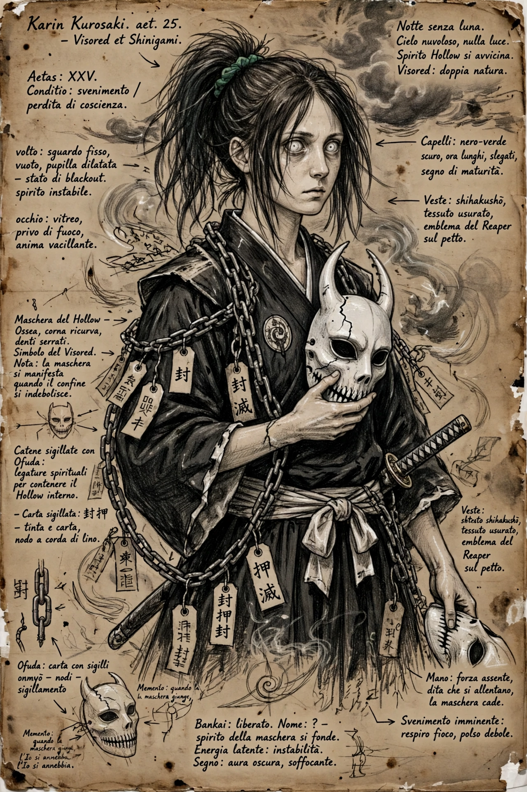

Twelve years after the Thousand-Year Blood War, Hell keeps an intake office for the dead — stamping souls claimed on paper, hearings that never happened. The brother laid the sword down. The sister sees the chains. And her claim is the one the office cannot file: her power was never transferred, never recorded — it is natural, the Kurosaki bloodline's own. Free to read.



# THE LITTLEST SISTER, WHEN SHE BLACKS OUT ## Manga Arc — Episode 1: THE INTAKE （受付） Flagpole of Claim and Coinage: Johnathan 'Qasparr' Monroe, ARR, All Rights Reserved, Without Prejudice. Private register — the Bleach publication hold stands. Fan-work arc from the founder's treatment; characters credited to Tite Kubo / Shueisha / Pierrot / VIZ. Desk script under his Flagpole. FORMAT: Manga panel script with PARALLEL SUBS — each speech and caption carries the Japanese first (as spoken) and the English directly beneath. The Japanese is set in the FIRST EMPIRE'S DIALECT [desk reading, declared]: imperial-era register — kyuujitai character forms, historical kana, the de-aru voice for narration, katakana officialese for Hell's office, and Karin's own blunt plain speech left plain. MVRRAMASSA and the dance are the founder's; the dance's full form is reserved to the hearing. ——— PANEL 1 — Wide. Karakura Town at night. The Kurosaki clinic, one lit window. The sky: cloud-choked, starless, MOONLESS. CAPTION: 月無き夜、空座町。 [ A moonless night. Karakura Town. ] CAPTION: 戰ひは終はりて、十二年。 [ Twelve years since the war ended. ] PANEL 2 — The clinic step. KARIN, 25, clinic coat over her shoulders, breath smoking. Across the step, a seated SOUL in a torn captain's haori stares at nothing. KARIN: …見えるよ、あんた。 [ ...I can see you. You know that. ] PANEL 3 — Close on the soul's wrists: CHAINS, link upon link, every link pressed with a paper stamp-tag. CAPTION: 鎖。判子だらけの、鎖。 [ Chains. Chains covered in stamps. ] PANEL 4 — CAPTAIN: 醫者か。 [ Are you the doctor? ] KARIN: 娘だ。名前は。 [ The daughter. Your name. ] PANEL 5 — The captain looks at his own stamped wrists. CAPTAIN: 名は——事務廳が上書きした。 [ My name — the Office wrote over it. ] PANEL 6 — Behind him, light folds open like a blind: a DESK in the dark, registers stacked to the ceiling, a CLERK seated, stamp raised. The intake office of Hell. CLERK (katakana officialese): 書類ニ不備ナシ。聽聞ハ不要デアル。 [ THE PAPERS ARE WITHOUT DEFECT. A HEARING IS UNNECESSARY. ] PANEL 7 — Karin. The flat stare. Frost runs off the step's edge. Every small sound in the street goes out like a lamp. KARIN: …寒いな。 [ ...Cold, isn't it. ] PANEL 8 — BLACKOUT. Her eyes white over entirely. At her jaw, the SHADOW OF A MASK, half-formed. Her hand closes on the chain. SFX: ドクン [ dokun — one heartbeat, too loud ] KARIN (white-eyed, quiet): この鎖、全部讀める。 [ I can read every link of this chain. ] PANEL 9 — She leans close to the captain, and SPEAKS — the panel withholds the word itself; only his face answers, wrecked with relief. KARIN: あんたの本當の名は—— [ Your true name is— ] PANEL 10 — The clerk's stamp, frozen mid-air. For the first time, the office looks up. CLERK: 其ノ名ハ、登録ヨリ抹消濟デアル。 [ THAT NAME HAS ALREADY BEEN STRUCK FROM THE REGISTER. ] CAPTION: 惡魔の舞は、まだ始まらぬ。 [ The Devil's Dance has not yet begun. ] ——— Episode 1 ends. The founder's rulings seated in this script: Karin leads; the blackout is Hollowfication arriving uninvited; her Bankai is INHERITED, and its release — the female version of AKUMA NO MAI MUGETSU — is reserved to Movement III, the Moonless Hearing. Her sword: MVRRAMASSA. Her mask's face: still his pen.
